⚡ At a glance
🎯 Opportunity cards
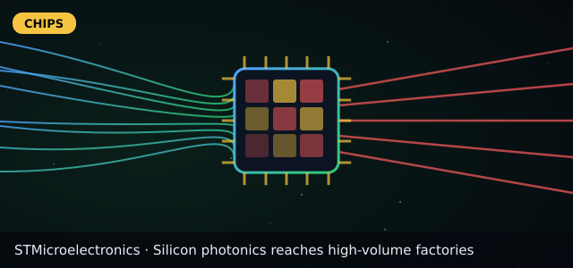
STM
STMicroelectronics
⏳ Build position 💪 High conviction ⏳ 2026-2027

STMSTMicroelectronics
- 1Paper
- 2Prototype
- 3Factories & orders
- 4Revenue
💡 Thesis
- 🎯 PIC100 photonics in volume
- 🔗 Silicon photonics reaches high-volume factories
📅 Catalysts
- ✅ PIC100 photonics in volume
⚠️ Risks
- ❌ Auto/industrial weakness
- ❌ Auto/industrial weakness
- ❌ Nvidia networking SVP: 'If you can use copper, use copper' — optics only where distance forces it.
✅ Plan
- ⏳ Build position · conviction High (score 66)
🗓 Timeline
- Step 1Capacity grows; more customers
- Step 2Over 4x capacity planned by 2027 (company plan)
- Step 3Next version (TSV) for co-packaged optics
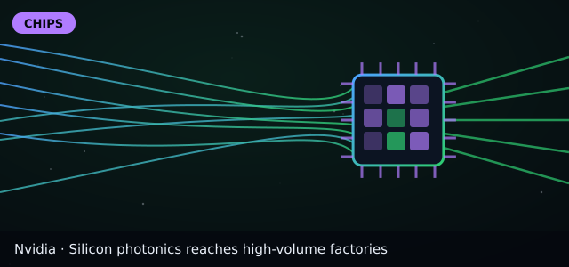
NVDA
Nvidia
⏳ Build position 💪 Medium conviction ⏳ Next results ~late Nov 2026 (est.)

NVDANvidia
- 1Paper
- 2Prototype
- 3Factories & orders
- 4Revenue
💡 Thesis
- 🎯 Vera Rubin ramp in full production
- 🔗 Silicon photonics reaches high-volume factories
- 🔗 A light switch sending 200 billion bits per second per colour
📅 Catalysts
- ✅ Vera Rubin ramp in full production
⚠️ Risks
- ❌ Customer capex slowdown; China rules
- ❌ Customer capex slowdown; China rules
- ❌ Nvidia networking SVP: 'If you can use copper, use copper' — optics only where distance forces it.
✅ Plan
- ⏳ Build position · conviction Medium (score 60)
🗓 Timeline
- Step 1Capacity grows; more customers
- Step 2Over 4x capacity planned by 2027 (company plan)
- Step 3Next version (TSV) for co-packaged optics
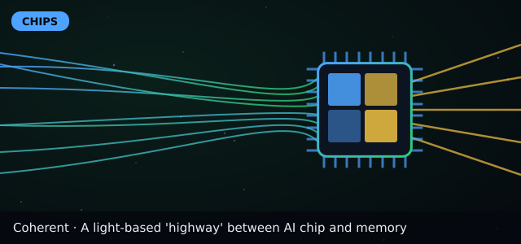
COHR
Coherent
⏳ Build position 💪 Medium conviction ⏳ 2026-2029

COHRCoherent
- 1Paper
- 2Prototype
- 3Factories & orders
- 4Revenue
💡 Thesis
- 🎯 Lasers/optics for photonic links & CPO
- 🔗 A light-based 'highway' between AI chip and memory
- 🔗 A light switch sending 200 billion bits per second per colour
- 🔗 Silicon photonics reaches high-volume factories
📅 Catalysts
- ✅ Lasers/optics for photonic links & CPO
⚠️ Risks
- ❌ Optics price wars
- ❌ Optics price wars
- ❌ Nvidia networking SVP: 'If you can use copper, use copper' — optics only where distance forces it.
✅ Plan
- ⏳ Build position · conviction Medium (score 64)
🗓 Timeline
- Step 1Prototype shown to partners
- Step 2Early customer trials
- Step 3Possibly inside some AI servers
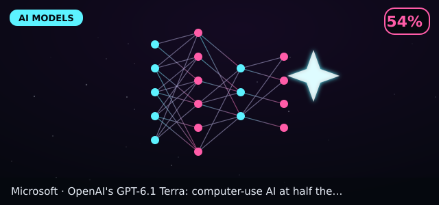
MSFT
Microsoft
👀 Watch 💪 Watch conviction ⏳ 2026-2028

MSFTMicrosoft
- 1Paper / research
- 2Limited preview
- 3Generally available
- 4Widely adopted
💡 Thesis
- 🎯 Major OpenAI partner; GPT-6.1 Terra launch
- 🔗 OpenAI's GPT-6.1 Terra: computer-use AI at half the price, with errors cut from
📅 Catalysts
- ✅ Major OpenAI partner; GPT-6.1 Terra launch
⚠️ Risks
- ❌ AI is one part of a huge business
- ❌ Diluted exposure (our judgment)
✅ Plan
- 👀 Watch · conviction Watch (score 58)
🗓 Timeline
- 1 yrCommon in office automation
- 3 yrAI agents handle routine desk tasks
- 5 yrMost form-filling work automated
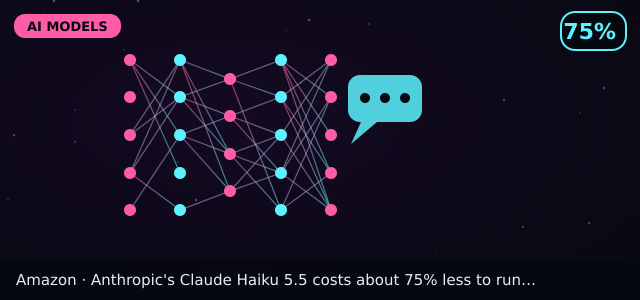
AMZN
Amazon
👀 Watch 💪 Watch conviction ⏳ 2026-2028

AMZNAmazon
- 1Paper / research
- 2Limited preview
- 3Generally available
- 4Widely adopted
💡 Thesis
- 🎯 Anthropic investor; Claude Haiku 5.5 on AWS
- 🔗 Anthropic's Claude Haiku 5.5 costs about 75% less to run than Haiku 4.5
📅 Catalysts
- ✅ Anthropic investor; Claude Haiku 5.5 on AWS
⚠️ Risks
- ❌ AI model price wars
- ❌ Diluted exposure (our judgment)
✅ Plan
- 👀 Watch · conviction Watch (score 58)
🗓 Timeline
- 1 yrSmall models replace big ones for routine tasks
- 3 yrAI cost per task keeps falling
- 5 yrAI in most software by default
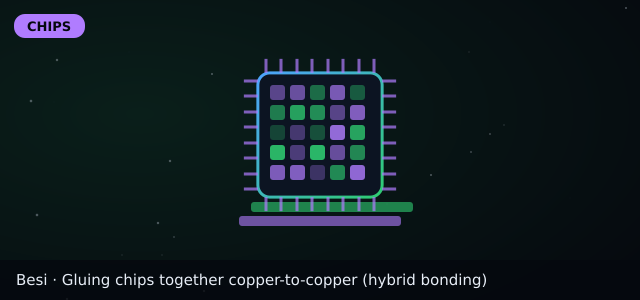
BESI.AS
Besi
👀 Watch 💪 High conviction ⏳ 2026-2028

BESI.ASBesi
- 1Paper
- 2Prototype
- 3Factories & orders
- 4Revenue
💡 Thesis
- 🎯 Hybrid bonding tied to Applied Materials partnership
- 🔗 Gluing chips together copper-to-copper (hybrid bonding)
📅 Catalysts
- ✅ Hybrid bonding tied to Applied Materials partnership
⚠️ Risks
- ❌ Adoption timing slips
- ❌ Adoption timing slips
- ❌ SK hynix: hybrid bonding not ready for HBM4E.
✅ Plan
- 👀 Watch · conviction High (score 88)
🗓 Timeline
- Step 1More orders for bonding machines
- Step 2Used in some memory and logic stacks
- Step 3Standard for top AI chips
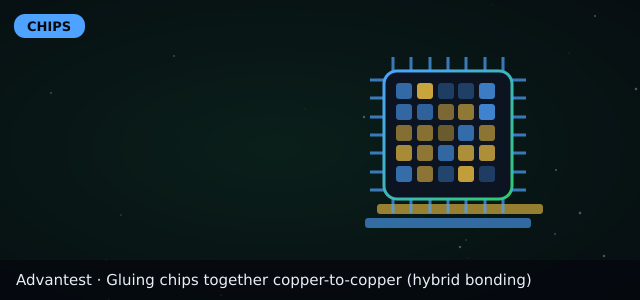
6857.T
Advantest
👀 Watch 💪 Medium conviction ⏳ Now-2027

6857.TAdvantest
- 1Paper
- 2Prototype
- 3Factories & orders
- 4Revenue
💡 Thesis
- 🎯 AI chip testing demand
- 🔗 Gluing chips together copper-to-copper (hybrid bonding)
📅 Catalysts
- ✅ AI chip testing demand
⚠️ Risks
- ❌ Cyclical; valuation
- ❌ Cyclical; valuation
- ❌ SK hynix: hybrid bonding not ready for HBM4E.
✅ Plan
- 👀 Watch · conviction Medium (score 64)
🗓 Timeline
- Step 1More orders for bonding machines
- Step 2Used in some memory and logic stacks
- Step 3Standard for top AI chips
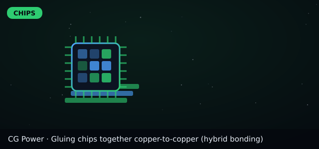
CGPOWER.NS
CG Power
👀 Watch 💪 Watch conviction ⏳ 2026-2027

CGPOWER.NSCG Power
- 1Paper
- 2Prototype
- 3Factories & orders
- 4Revenue
💡 Thesis
- 🎯 Chip packaging JV with Renesas & Stars
- 🔗 Gluing chips together copper-to-copper (hybrid bonding)
📅 Catalysts
- ✅ Chip packaging JV with Renesas & Stars
⚠️ Risks
- ❌ Execution; ramp delays
- ❌ Execution; ramp delays
- ❌ SK hynix: hybrid bonding not ready for HBM4E.
✅ Plan
- 👀 Watch · conviction Watch (score 52)
🗓 Timeline
- Step 1More orders for bonding machines
- Step 2Used in some memory and logic stacks
- Step 3Standard for top AI chips
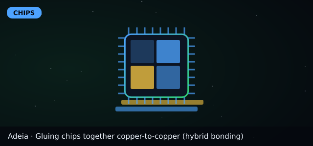
ADEA
Adeia
👀 Watch 💪 Medium conviction ⏳ 2026-2028

ADEAAdeia
- 1Paper
- 2Prototype
- 3Factories & orders
- 4Revenue
💡 Thesis
- 🎯 Licenses hybrid-bonding IP
- 🔗 Gluing chips together copper-to-copper (hybrid bonding)
📅 Catalysts
- ✅ Licenses hybrid-bonding IP
⚠️ Risks
- ❌ Litigation outcomes
- ❌ Litigation outcomes
- ❌ SK hynix: hybrid bonding not ready for HBM4E.
✅ Plan
- 👀 Watch · conviction Medium (score 64)
🗓 Timeline
- Step 1More orders for bonding machines
- Step 2Used in some memory and logic stacks
- Step 3Standard for top AI chips
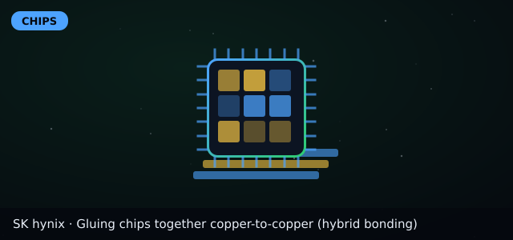
000660.KS
SK hynix
👀 Watch 💪 High conviction ⏳ Now-2027

000660.KSSK hynix
- 1Paper
- 2Prototype
- 3Factories & orders
- 4Revenue
💡 Thesis
- 🎯 Q3 (Oct 28): revenue ₩104.6T (+328% YoY), DRAM/HBM booked through 2029, long-term deals with 14 customers cover >50% of 2027-28 output
- 🔗 Gluing chips together copper-to-copper (hybrid bonding)
📅 Catalysts
- ✅ Q3 (Oct 28): revenue ₩104.6T (+328% YoY), DRAM/HBM booked through 2029, long-term deals with 14 customers cover >50% of 2027-28 output
⚠️ Risks
- ❌ Memory price cycle reversal
- ❌ Memory price cycle reversal
- ❌ SK hynix: hybrid bonding not ready for HBM4E.
✅ Plan
- 👀 Watch · conviction High (score 80)
🗓 Timeline
- Step 1More orders for bonding machines
- Step 2Used in some memory and logic stacks
- Step 3Standard for top AI chips
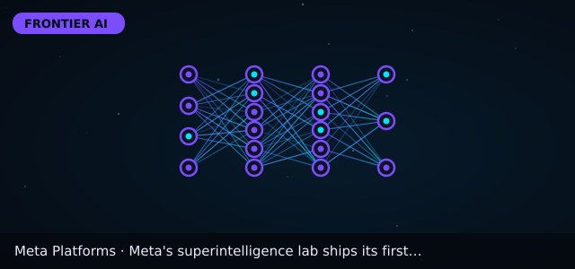
META
Meta Platforms
👀 Watch 💪 High conviction ⏳ Now-2027

METAMeta Platforms
- 1Research
- 2Preview
- 3Shipping
- 4Widely adopted
💡 Thesis
- 🎯 Muse Wonder frontier model and Muse Spark Open
- 🔗 Meta's superintelligence lab ships its first frontier model, Muse Wonder
- 🔗 Meta releases Muse Spark Open, which it calls the most capable US open-weight mo
📅 Catalysts
- ✅ Muse Wonder frontier model and Muse Spark Open
⚠️ Risks
- ❌ AI spending is huge; returns unproven
- ❌ AI is a small direct revenue line vs ads (our judgment)
✅ Plan
- 👀 Watch · conviction High (score 71)
🗓 Timeline
- 1 yrRapid model updates
- 3 yrAgent products built on it
- 5 yrCompetitive position vs other labs unclear
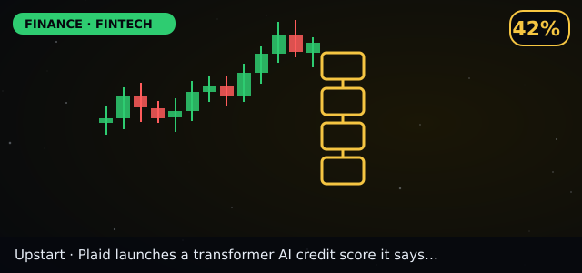
UPST
Upstart
👀 Watch 💪 High conviction ⏳ 2026-2027

UPSTUpstart
- 1Research / sandbox
- 2Pilot
- 3Live launch
- 4Scaled & regulated
💡 Thesis
- 🎯 Cash-flow and AI credit models gaining ground (sector signal from Plaid launch)
- 🔗 Plaid launches a transformer AI credit score it says predicts repayment 42% bett
📅 Catalysts
- ✅ Cash-flow and AI credit models gaining ground (sector signal from Plaid launch)
⚠️ Risks
- ❌ Credit cycle and funding risk
- ❌ Not directly tied to Plaid; sector read-across only (our judgment)
✅ Plan
- 👀 Watch · conviction High (score 66)
🗓 Timeline
- 1 yrMore lenders test transaction-based scores
- 3 yrCommon in fintech lending
- 5 yrCould feed mainstream bank underwriting
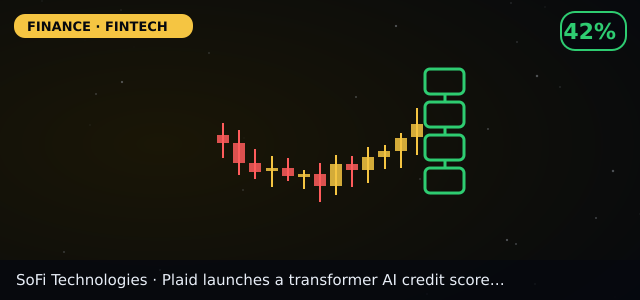
SOFI
SoFi Technologies
👀 Watch 💪 Medium conviction ⏳ 2026-2028

SOFISoFi Technologies
- 1Research / sandbox
- 2Pilot
- 3Live launch
- 4Scaled & regulated
💡 Thesis
- 🎯 Fintech lender that could adopt cash-flow underwriting
- 🔗 Plaid launches a transformer AI credit score it says predicts repayment 42% bett
📅 Catalysts
- ✅ Fintech lender that could adopt cash-flow underwriting
⚠️ Risks
- ❌ Credit losses in a downturn
- ❌ Read-across only (our judgment)
✅ Plan
- 👀 Watch · conviction Medium (score 58)
🗓 Timeline
- 1 yrMore lenders test transaction-based scores
- 3 yrCommon in fintech lending
- 5 yrCould feed mainstream bank underwriting
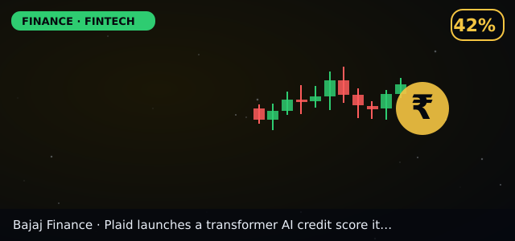
BAJFINANCE.NS
Bajaj Finance
👀 Watch 💪 Watch conviction ⏳ 2026-2028

BAJFINANCE.NSBajaj Finance
- 1Research / sandbox
- 2Pilot
- 3Live launch
- 4Scaled & regulated
💡 Thesis
- 🎯 Large Indian consumer lender using data-driven credit (read-across)
- 🔗 Plaid launches a transformer AI credit score it says predicts repayment 42% bett
📅 Catalysts
- ✅ Large Indian consumer lender using data-driven credit (read-across)
⚠️ Risks
- ❌ Indian credit-cycle risk
- ❌ Read-across only (our judgment)
✅ Plan
- 👀 Watch · conviction Watch (score 54)
🗓 Timeline
- 1 yrMore lenders test transaction-based scores
- 3 yrCommon in fintech lending
- 5 yrCould feed mainstream bank underwriting
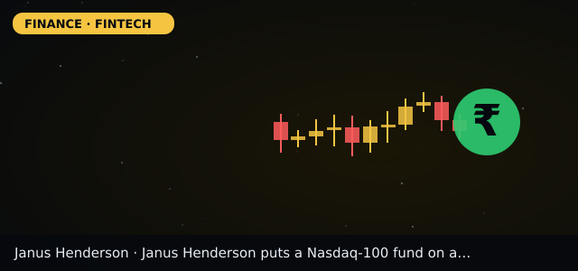
JHG
Janus Henderson
👀 Watch 💪 Medium conviction ⏳ 2026-2028

JHGJanus Henderson
- 1Research / sandbox
- 2Pilot
- 3Live launch
- 4Scaled & regulated
💡 Thesis
- 🎯 Launched JQQQ tokenized Nasdaq-100 fund (Oct 27)
- 🔗 Janus Henderson puts a Nasdaq-100 fund on a blockchain (JQQQ)
📅 Catalysts
- ✅ Launched JQQQ tokenized Nasdaq-100 fund (Oct 27)
⚠️ Risks
- ❌ Tokenized assets are a tiny share of its funds
- ❌ Small revenue impact near term (our judgment)
✅ Plan
- 👀 Watch · conviction Medium (score 58)
🗓 Timeline
- 1 yrMore index funds go on-chain
- 3 yrTokenized funds used as collateral in trading
- 5 yrPart of mainstream fund distribution if rules allow
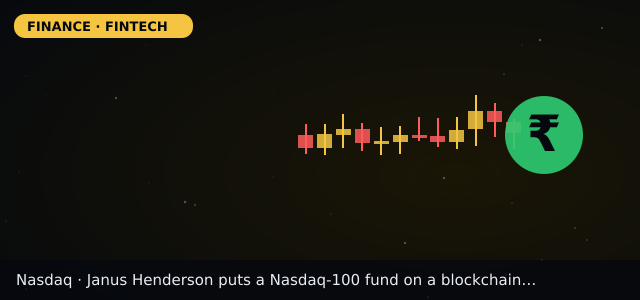
NDAQ
Nasdaq
👀 Watch 💪 Watch conviction ⏳ 2026-2028

NDAQNasdaq
- 1Research / sandbox
- 2Pilot
- 3Live launch
- 4Scaled & regulated
💡 Thesis
- 🎯 Licensed Nasdaq-100 to the first issuer-sponsored tokenized fund
- 🔗 Janus Henderson puts a Nasdaq-100 fund on a blockchain (JQQQ)
📅 Catalysts
- ✅ Licensed Nasdaq-100 to the first issuer-sponsored tokenized fund
⚠️ Risks
- ❌ Licensing fees from tokenized funds are small
- ❌ Diluted exposure (our judgment)
✅ Plan
- 👀 Watch · conviction Watch (score 54)
🗓 Timeline
- 1 yrMore index funds go on-chain
- 3 yrTokenized funds used as collateral in trading
- 5 yrPart of mainstream fund distribution if rules allow
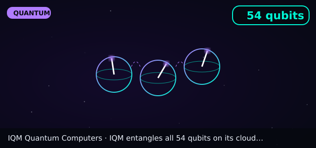
IQMX
IQM Quantum Computers
👀 Watch 💪 High conviction ⏳ 2027+

IQMXIQM Quantum Computers
- 1Lab physics
- 2Hardware demo
- 3Cloud access / customers
- 4Commercial advantage
💡 Thesis
- 🎯 Full 54-qubit entanglement on cloud Emerald
- 🔗 IQM entangles all 54 qubits on its cloud Emerald chip at once
📅 Catalysts
- ✅ Full 54-qubit entanglement on cloud Emerald
⚠️ Risks
- ❌ Fidelity only just above threshold
- ❌ Small company in a crowded field (our judgment)
✅ Plan
- 👀 Watch · conviction High (score 75)
🗓 Timeline
- 1 yrLarger IQM chips
- 3 yrCustomer algorithms using full chips
- 5 yrCompetitive cloud offering if error rates fall
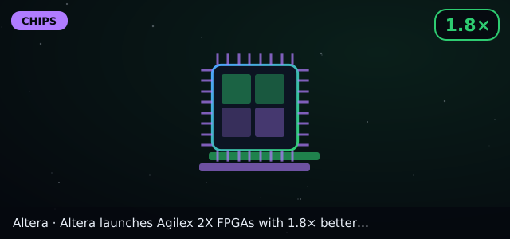
🔒 Private
Altera
👀 Watch 💪 Watch conviction ⏳ 2027

🔒 PrivateAltera
- 1Paper
- 2Prototype
- 3Factories & orders
- 4Revenue
💡 Thesis
- 🎯 Agilex 2X FPGA launch (Oct 28)
- 🔗 Altera launches Agilex 2X FPGAs with 1.8× better performance per watt for AI inf
📅 Catalysts
- ✅ Agilex 2X FPGA launch (Oct 28)
⚠️ Risks
- ❌ Not listed; FPGAs lose to custom chips for pure AI maths
- ❌ Performance figure is vendor-claimed
✅ Plan
- 👀 Watch · conviction Watch (score 71)
🗓 Timeline
- Step 1Early customer designs.
- Step 2In network gear and AI servers.
- Step 3Replaced by the next generation.
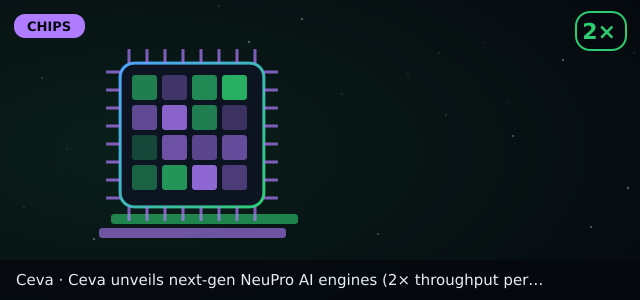
CEVA
Ceva
👀 Watch 💪 Medium conviction ⏳ 2027-2029 (royalties lag)

CEVACeva
- 1Paper
- 2Prototype
- 3Factories & orders
- 4Revenue
💡 Thesis
- 🎯 Next-gen NeuPro NPU IP (Oct 28); early access now, general availability Q2 2027
- 🔗 Ceva unveils next-gen NeuPro AI engines (2× throughput per mm²) and enters AI in
📅 Catalysts
- ✅ Next-gen NeuPro NPU IP (Oct 28); early access now, general availability Q2 2027
⚠️ Risks
- ❌ Crowded IP market; vendor-claimed gains
- ❌ General availability not until Q2 2027
✅ Plan
- 👀 Watch · conviction Medium (score 62)
🗓 Timeline
- Step 1Early-access licensees.
- Step 2First chips using it ship.
- Step 3Royalties if widely adopted.
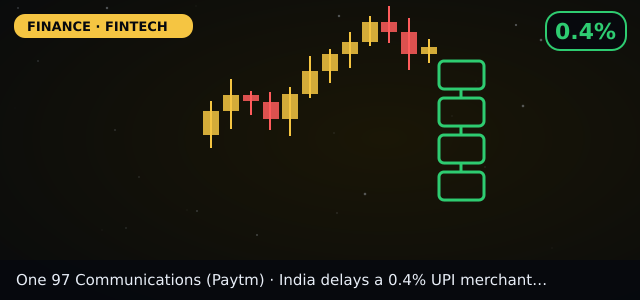
PAYTM.NS
One 97 Communications (Paytm)
👀 Watch 💪 Medium conviction ⏳ 2026-2027

PAYTM.NSOne 97 Communications (Paytm)
- 1Research / sandbox
- 2Pilot
- 3Live launch
- 4Scaled & regulated
💡 Thesis
- 🎯 UPI MDR 0.4% above ₹2,000 to start after Diwali, date to be notified
- 🔗 India delays a 0.4% UPI merchant fee to 'immediately after Diwali'
📅 Catalysts
- ✅ UPI MDR 0.4% above ₹2,000 to start after Diwali, date to be notified
⚠️ Risks
- ❌ Fee could be cut or dropped after Supreme Court review
- ❌ Policy may change (our judgment)
✅ Plan
- 👀 Watch · conviction Medium (score 62)
🗓 Timeline
- 1 yrFee starts or is changed after court review
- 3 yrPayment apps earn more per transaction
- 5 yre-rupee used for programmable payments alongside UPI
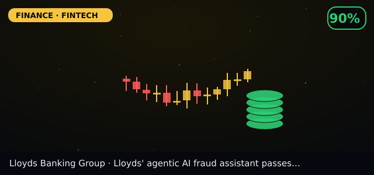
LYG
Lloyds Banking Group
👀 Watch 💪 Watch conviction ⏳ 2026-2027

LYGLloyds Banking Group
- 1Research / sandbox
- 2Pilot
- 3Live launch
- 4Scaled & regulated
💡 Thesis
- 🎯 Agentic AI fraud platform >90% accuracy (Oct 26)
- 🔗 Lloyds' agentic AI fraud assistant passes 90% decision accuracy on 10,600 live c
📅 Catalysts
- ✅ Agentic AI fraud platform >90% accuracy (Oct 26)
⚠️ Risks
- ❌ Fraud AI is a small cost lever for a large bank
- ❌ Diluted exposure (our judgment)
✅ Plan
- 👀 Watch · conviction Watch (score 48)
🗓 Timeline
- 1 yrRolled to more fraud types
- 3 yrAgentic AI common in bank investigations
- 5 yrLinked with anti-money-laundering checks
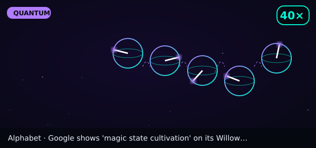
GOOGL
Alphabet
👀 Watch 💪 Medium conviction ⏳ 2027+

GOOGLAlphabet
- 1Lab physics
- 2Hardware demo
- 3Cloud access / customers
- 4Commercial advantage
💡 Thesis
- 🎯 Magic-state cultivation on Willow (Oct 15) and Genie 4 world model
- 🔗 Google shows 'magic state cultivation' on its Willow chip, cutting errors about
- 🔗 Google DeepMind's Genie 4 generates interactive worlds with sound and dialogue
- 🔗 Google's Gemini 4 Carbon ranks #1 on a new independent AI index, first given to
📅 Catalysts
- ✅ Magic-state cultivation on Willow (Oct 15) and Genie 4 world model
⚠️ Risks
- ❌ Quantum and world models are tiny vs. its ad and cloud business
- ❌ Exposure is diluted by a huge core business (our judgment)
✅ Plan
- 👀 Watch · conviction Medium (score 56)
🗓 Timeline
- 1 yrRepeated on bigger chips
- 3 yrCombined with logical qubits in algorithms
- 5 yrPart of an error-corrected machine if scaling works
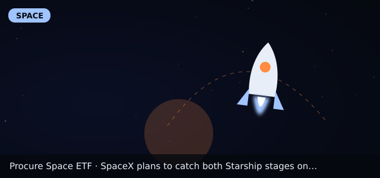
UFO
Procure Space ETF
👀 Watch 💪 Medium conviction ⏳ 2027+

UFOProcure Space ETF
- 1Design
- 2Testing
- 3Flight
- 4Operations
💡 Thesis
- 🎯 Basket exposure to space companies (our judgment)
- 🔗 SpaceX plans to catch both Starship stages on Flight 15
- 🔗 Rocket Lab pushes Neutron's first launch to 2027 after finding flaws in fuel-tan
📅 Catalysts
- ✅ Basket exposure to space companies (our judgment)
⚠️ Risks
- ❌ Many holdings are satellite/telecom, not rockets
- ❌ SpaceX and Blue Origin are private, so ETFs miss them (our judgment)
✅ Plan
- 👀 Watch · conviction Medium (score 51)
🗓 Timeline
- 1 yrCatch attempt result
- 3 yrFaster launch cadence
- 5 yrCheaper launches if reuse is routine
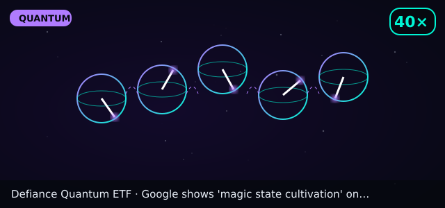
QTUM
Defiance Quantum ETF
👀 Watch 💪 Medium conviction ⏳ 2027+

QTUMDefiance Quantum ETF
- 1Lab physics
- 2Hardware demo
- 3Cloud access / customers
- 4Commercial advantage
💡 Thesis
- 🎯 Basket exposure to quantum and related computing firms (our judgment)
- 🔗 Google shows 'magic state cultivation' on its Willow chip, cutting errors about
- 🔗 Quantinuum reports 99.9995% logical fidelity on Helios, five errors per million
- 🔗 IQM entangles all 54 qubits on its cloud Emerald chip at once
📅 Catalysts
- ✅ Basket exposure to quantum and related computing firms (our judgment)
⚠️ Risks
- ❌ Holdings are mostly large tech, not pure quantum
- ❌ Check holdings before assuming quantum exposure
✅ Plan
- 👀 Watch · conviction Medium (score 50)
🗓 Timeline
- 1 yrRepeated on bigger chips
- 3 yrCombined with logical qubits in algorithms
- 5 yrPart of an error-corrected machine if scaling works
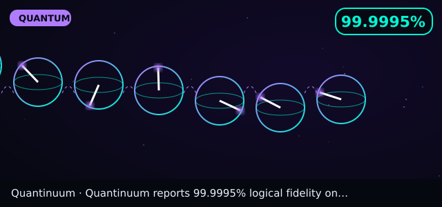
QNT
Quantinuum
👀 Watch 💪 High conviction ⏳ 2027-2029

QNTQuantinuum
- 1Lab physics
- 2Hardware demo
- 3Cloud access / customers
- 4Commercial advantage
💡 Thesis
- 🎯 99.9995% logical fidelity on Helios; Apollo targeted for 2029
- 🔗 Quantinuum reports 99.9995% logical fidelity on Helios, five errors per million
📅 Catalysts
- ✅ 99.9995% logical fidelity on Helios; Apollo targeted for 2029
⚠️ Risks
- ❌ Company-reported records; long path to profit
- ❌ Pure-play quantum stocks are volatile (our judgment)
✅ Plan
- 👀 Watch · conviction High (score 74)
🗓 Timeline
- 1 yrMore records on Helios
- 3 yrApollo prototypes
- 5 yrFault-tolerant machine if the 2029 plan holds
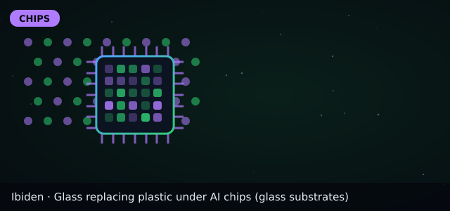
4062.T
Ibiden
👀 Watch 💪 Medium conviction ⏳ 2027-2028

4062.TIbiden
- 1Paper
- 2Prototype
- 3Factories & orders
- 4Revenue
💡 Thesis
- 🎯 Glass substrate validation with TSMC (reported)
- 🔗 Glass replacing plastic under AI chips (glass substrates)
📅 Catalysts
- ✅ Glass substrate validation with TSMC (reported)
⚠️ Risks
- ❌ Glass may arrive late
- ❌ Glass may arrive late
- ❌ Glass timelines keep slipping (Tom's Hardware).
✅ Plan
- 👀 Watch · conviction Medium (score 61)
🗓 Timeline
- Step 1Pilot lines and samples
- Step 2First AI products on glass, if yields are good
- Step 3Common in big AI chips
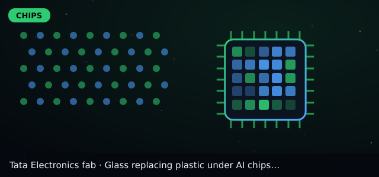
Unlisted (parent: Tata group cos)
Tata Electronics fab
👀 Watch 💪 Watch conviction ⏳ 2027+ (est.)

Unlisted (parent: Tata group cos)Tata Electronics fab
- 1Paper
- 2Prototype
- 3Factories & orders
- 4Revenue
💡 Thesis
- 🎯 ₹91,526 cr Gujarat fab with PSMC
- 🔗 Glass replacing plastic under AI chips (glass substrates)
📅 Catalysts
- ✅ ₹91,526 cr Gujarat fab with PSMC
⚠️ Risks
- ❌ Not directly investable
- ❌ Not directly investable
- ❌ Glass timelines keep slipping (Tom's Hardware).
✅ Plan
- 👀 Watch · conviction Watch (score 45)
🗓 Timeline
- Step 1Pilot lines and samples
- Step 2First AI products on glass, if yields are good
- Step 3Common in big AI chips
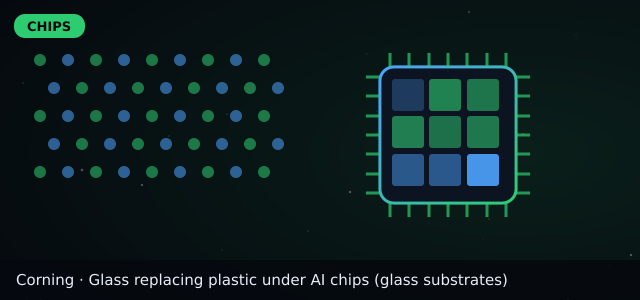
GLW
Corning
👀 Watch 💪 Medium conviction ⏳ 2027-2029

GLWCorning
- 1Paper
- 2Prototype
- 3Factories & orders
- 4Revenue
💡 Thesis
- 🎯 Glass core substrates
- 🔗 Glass replacing plastic under AI chips (glass substrates)
📅 Catalysts
- ✅ Glass core substrates
⚠️ Risks
- ❌ Glass adoption slips
- ❌ Glass adoption slips
- ❌ Glass timelines keep slipping (Tom's Hardware).
✅ Plan
- 👀 Watch · conviction Medium (score 53)
🗓 Timeline
- Step 1Pilot lines and samples
- Step 2First AI products on glass, if yields are good
- Step 3Common in big AI chips
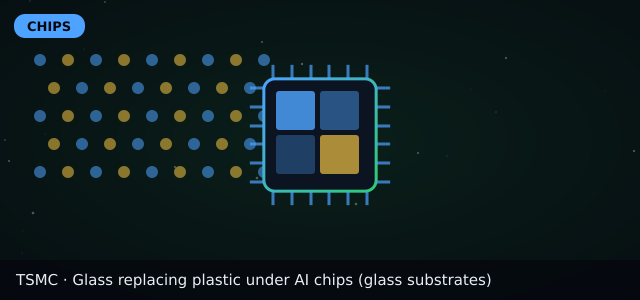
TSM
TSMC
👀 Watch 💪 Medium conviction ⏳ Q4 2026 (Jan 2027 results)

TSMTSMC
- 1Paper
- 2Prototype
- 3Factories & orders
- 4Revenue
💡 Thesis
- 🎯 2nm steep ramp; Q4 guide $52.3-54.3B
- 🔗 Glass replacing plastic under AI chips (glass substrates)
📅 Catalysts
- ✅ 2nm steep ramp; Q4 guide $52.3-54.3B
⚠️ Risks
- ❌ Taiwan risk; overseas fab margin drag
- ❌ Taiwan risk; overseas fab margin drag
- ❌ Glass timelines keep slipping (Tom's Hardware).
✅ Plan
- 👀 Watch · conviction Medium (score 57)
🗓 Timeline
- Step 1Pilot lines and samples
- Step 2First AI products on glass, if yields are good
- Step 3Common in big AI chips
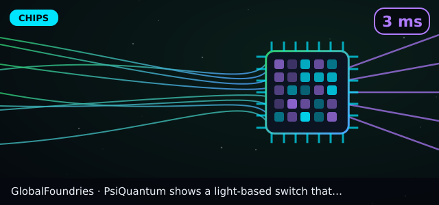
GFS
GlobalFoundries
👀 Watch 💪 Medium conviction ⏳ 2027+

GFSGlobalFoundries
- 1Paper
- 2Prototype
- 3Factories & orders
- 4Revenue
💡 Thesis
- 🎯 Makes PsiQuantum's silicon-photonics chips, including the new optical switch (Oct 28)
- 🔗 PsiQuantum shows a light-based switch that rewires AI data-centre networks in 3
📅 Catalysts
- ✅ Makes PsiQuantum's silicon-photonics chips, including the new optical switch (Oct 28)
⚠️ Risks
- ❌ Photonics is a small part of revenue
- ❌ Switch results are company-reported; only an 8×8 port count
✅ Plan
- 👀 Watch · conviction Medium (score 46)
🗓 Timeline
- Step 1Samples tested by a few big cloud firms.
- Step 2First switches in real AI clusters if tests go well.
- Step 3Could be a standard part of AI networks, or lose to cheaper electrical switches.
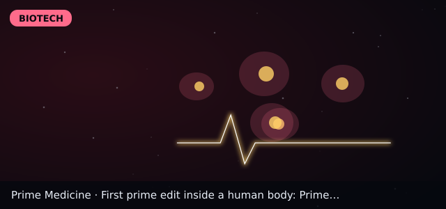
PRME
Prime Medicine
👀 Watch 💪 High conviction ⏳ 2027

PRMEPrime Medicine
- 1Preclinical
- 2Early trial (Ph 1/2)
- 3Late trial (Ph 3)
- 4Approved
💡 Thesis
- 🎯 First in-body prime edit (Wilson's disease); data expected next year
- 🔗 First prime edit inside a human body: Prime Medicine treats a Wilson's disease p
📅 Catalysts
- ✅ First in-body prime edit (Wilson's disease); data expected next year
⚠️ Risks
- ❌ Single patient, no efficacy data yet
- ❌ Clinical-stage biotech can fall sharply on trial news (our judgment)
✅ Plan
- 👀 Watch · conviction High (score 65)
🗓 Timeline
- 1 yrFirst safety and copper data
- 3 yrMore patients dosed if safe
- 5 yrPossible approval path if efficacy holds
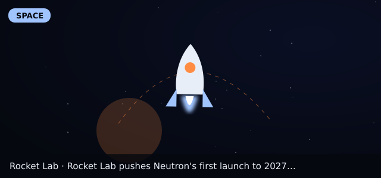
RKLB
Rocket Lab
👀 Watch 💪 Medium conviction ⏳ 2027

RKLBRocket Lab
- 1Design
- 2Testing
- 3Flight
- 4Operations
💡 Thesis
- 🎯 Neutron debut slipped to 2027
- 🔗 Rocket Lab pushes Neutron's first launch to 2027 after finding flaws in fuel-tan
📅 Catalysts
- ✅ Neutron debut slipped to 2027
⚠️ Risks
- ❌ Further schedule slips
- ❌ Delay already announced; execution risk remains
✅ Plan
- 👀 Watch · conviction Medium (score 56)
🗓 Timeline
- 1 yrStage tests finish
- 3 yrFirst launch
- 5 yrRegular flights if debut succeeds
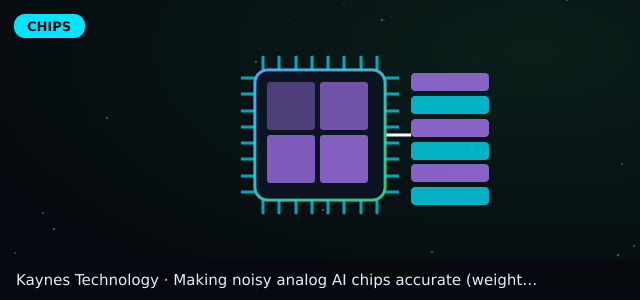
KAYNES.NS
Kaynes Technology
👀 Watch 💪 Watch conviction ⏳ 2026-2027

KAYNES.NSKaynes Technology
- 1Paper
- 2Prototype
- 3Factories & orders
- 4Revenue
💡 Thesis
- 🎯 OSAT plant in commercial production (ISM)
- 🔗 Making noisy analog AI chips accurate (weight splitting)
📅 Catalysts
- ✅ OSAT plant in commercial production (ISM)
⚠️ Risks
- ❌ Small scale; high expectations priced in
- ❌ Small scale; high expectations priced in
- ❌ System-level review: specialised analog/physical accelerators can show 'little or no advantage' once conversion, control and memory access are counted.
✅ Plan
- 👀 Watch · conviction Watch (score 34)
🗓 Timeline
- Step 1Follow-up papers
- Step 2Shown on real Micron test silicon
- Step 3Could ship inside analog-AI memory products
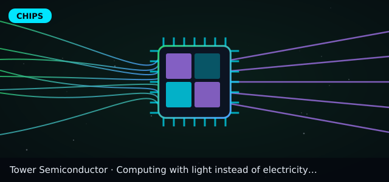
TSEM
Tower Semiconductor
👀 Watch 💪 Medium conviction ⏳ 2026-2029

TSEMTower Semiconductor
- 1Paper
- 2Prototype
- 3Factories & orders
- 4Revenue
💡 Thesis
- 🎯 Photonics foundry for startups
- 🔗 Computing with light instead of electricity (optical AI chip)
- 🔗 A light switch sending 200 billion bits per second per colour
📅 Catalysts
- ✅ Photonics foundry for startups
⚠️ Risks
- ❌ Customer concentration
- ❌ Customer concentration
- ❌ Nature Photonics review (2026): in the cloud, losses and light-to-electric conversions 'dominate power' and have so far prevented commercial photonic tensor cores.
✅ Plan
- 👀 Watch · conviction Medium (score 49)
🗓 Timeline
- Step 1Lab demos and first test chips
- Step 2Pilot units in a few data centres, if tests go well
- Step 3Could be a niche accelerator for specific AI jobs
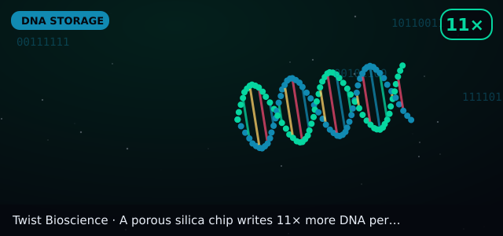
TWST
Twist Bioscience
👀 Watch 💪 Watch conviction ⏳ 2029+

TWSTTwist Bioscience
- 1Lab proof
- 2Prototype system
- 3Pilot archives
- 4Commercial service
💡 Thesis
- 🎯 DNA synthesis maker; DNA storage would need cheap writing (our judgment)
- 🔗 A porous silica chip writes 11× more DNA per spot, a step to cheaper 'DNA drives
- 🔗 HKU's 'Gungnir' code recovers data from DNA damaged like 400-year-old archives
📅 Catalysts
- ✅ DNA synthesis maker; DNA storage would need cheap writing (our judgment)
⚠️ Risks
- ❌ DNA storage is not a material revenue line today (our judgment)
- ❌ Link to these papers is our judgment, not company news
✅ Plan
- 👀 Watch · conviction Watch (score 32)
🗓 Timeline
- 1 yrFollow-up with denser arrays
- 3 yrPrototype DNA-writing chips
- 5 yrCould cut DNA-write cost if paired with fab partners
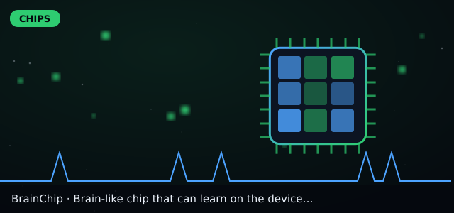
BRN.AX
BrainChip
👀 Watch 💪 Speculative conviction ⏳ 2027+

BRN.AXBrainChip
- 1Paper
- 2Prototype
- 3Factories & orders
- 4Revenue
💡 Thesis
- 🎯 Edge neuromorphic chips
- 🔗 Brain-like chip that can learn on the device (neuromorphic)
📅 Catalysts
- ✅ Edge neuromorphic chips
- 📅 2026-11-03 AMD Q3 2026 results (after US market close)
⚠️ Risks
- ❌ Tiny revenue; dilution
- ❌ Tiny revenue; dilution
- ❌ BrainChip, a listed neuromorphic pioneer, reported only US$1.22M revenue and a US$12.0M loss for H1 2026 — commercial demand for brain-like chips is still tiny.
✅ Plan
- 👀 Watch · conviction Speculative (score 55)
🗓 Timeline
- Step 1More FPGA demos
- Step 2First real chips (tape-out)
- Step 3Possible use in robots and cameras
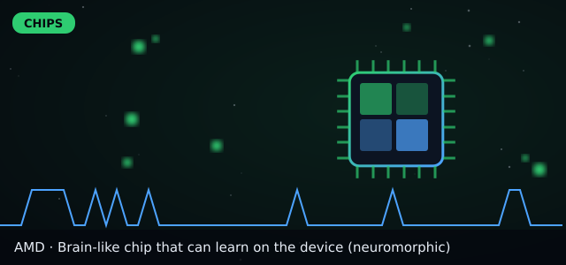
AMD
AMD
👀 Watch 💪 Watch conviction ⏳ Nov 3 2026

AMDAMD
- 1Paper
- 2Prototype
- 3Factories & orders
- 4Revenue
💡 Thesis
- 🎯 Q3 results Nov 3 2026; Q3 revenue guide ~$13.0B
- 🔗 Brain-like chip that can learn on the device (neuromorphic)
📅 Catalysts
- ✅ Q3 results Nov 3 2026; Q3 revenue guide ~$13.0B
- 📅 2026-11-03 AMD Q3 2026 results (after US market close)
⚠️ Risks
- ❌ Execution vs Nvidia
- ❌ Execution vs Nvidia
- ❌ BrainChip, a listed neuromorphic pioneer, reported only US$1.22M revenue and a US$12.0M loss for H1 2026 — commercial demand for brain-like chips is still tiny.
✅ Plan
- 👀 Watch · conviction Watch (score 39)
🗓 Timeline
- Step 1More FPGA demos
- Step 2First real chips (tape-out)
- Step 3Possible use in robots and cameras
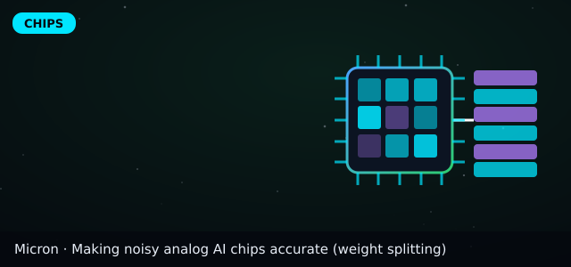
MU
Micron
👀 Watch 💪 Medium conviction ⏳ 2026-2029

MUMicron
- 1Paper
- 2Prototype
- 3Factories & orders
- 4Revenue
💡 Thesis
- 🎯 Analog in-memory & HBM; Gujarat plant
- 🔗 Making noisy analog AI chips accurate (weight splitting)
- 🔗 Storing many values in one memory spot (superposed analog memory)
📅 Catalysts
- ✅ Analog in-memory & HBM; Gujarat plant
⚠️ Risks
- ❌ Memory cycle
- ❌ Memory cycle
- ❌ System-level review: specialised analog/physical accelerators can show 'little or no advantage' once conversion, control and memory access are counted.
✅ Plan
- 👀 Watch · conviction Medium (score 51)
🗓 Timeline
- Step 1Follow-up papers
- Step 2Shown on real Micron test silicon
- Step 3Could ship inside analog-AI memory products
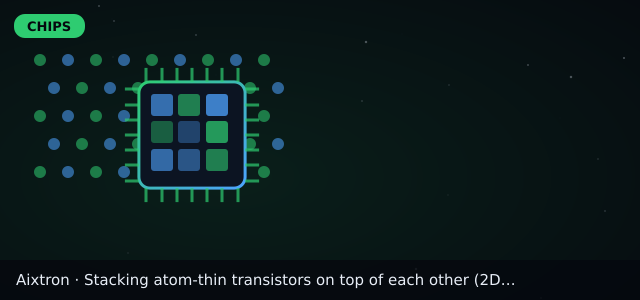
AIXA
Aixtron
👀 Watch 💪 Watch conviction ⏳ 2029+

AIXAAixtron
- 1Paper
- 2Prototype
- 3Factories & orders
- 4Revenue
💡 Thesis
- 🎯 Tools for 2D-material transistors
- 🔗 Stacking atom-thin transistors on top of each other (2D CFETs)
📅 Catalysts
- ✅ Tools for 2D-material transistors
⚠️ Risks
- ❌ Very long timeline
- ❌ Very long timeline
- ❌ Linked research is 6-10 years from market (our formula)
✅ Plan
- 👀 Watch · conviction Watch (score 26)
🗓 Timeline
- Step 1More lab tests on contacts
- Step 2Research pilot lines
- Step 3Still mostly research; mass use likely in the 2030s
📋 Full table view (filters, bull vs bear, scores)
🎯 Opportunities, earliest first
Every row links back to the research that could drive it. Earlier stage = more upside, more risk.
| Stage | Company (date added) | Region | Ticker | Catalyst | Timeline | Risk | Conviction | Driven by research |
|---|---|---|---|---|---|---|---|---|
| Stage 2 · Prototype | Alphabet | USA | GOOGL | Magic-state cultivation on Willow (Oct 15) and Genie 4 world model | 2027+ | Quantum and world models are tiny vs. its ad and cloud business🐂 vs 🐻 + score🐂 Magic-state cultivation on Willow (Oct 15) and Genie 4 world model.
| Medium | #4 Google shows 'magic state cultivation'… #14 Google DeepMind's Genie 4 generates in… #43 Google's Gemini 4 Carbon ranks #1 on a… #45 Anthropic's Claude Haiku 5.5 costs abo… |
| Stage 2 · Limited preview | Quantinuum | USA | QNT | 99.9995% logical fidelity on Helios; Apollo targeted for 2029 | 2027-2029 | Company-reported records; long path to profit🐂 vs 🐻 + score🐂 99.9995% logical fidelity on Helios; Apollo targeted for 2029.
| High | #5 Quantinuum reports 99.9995% logical fi… |
| Stage 2 · Hardware demo | IQM Quantum Computers | Finland | IQMX | Full 54-qubit entanglement on cloud Emerald | 2027+ | Fidelity only just above threshold🐂 vs 🐻 + score🐂 Full 54-qubit entanglement on cloud Emerald.
| High | #6 IQM entangles all 54 qubits on its clo… |
| Stage 2 · Hardware demo | Defiance Quantum ETF | USA | QTUM | Basket exposure to quantum and related computing firms (our judgment) | 2027+ | Holdings are mostly large tech, not pure quantum🐂 vs 🐻 + score🐂 Basket exposure to quantum and related computing firms (our judgment).
| Medium | #4 Google shows 'magic state cultivation'… #5 Quantinuum reports 99.9995% logical fi… #6 IQM entangles all 54 qubits on its clo… |
| Stage 2 · Hardware demo | Prime Medicine | USA | PRME | First in-body prime edit (Wilson's disease); data expected next year | 2027 | Single patient, no efficacy data yet🐂 vs 🐻 + score🐂 First in-body prime edit (Wilson's disease); data expected next year.
| High | #7 First prime edit inside a human body: … |
| Stage 2 · Early trial (Ph 1/2) | Meta Platforms | USA | META | Muse Wonder frontier model and Muse Spark Open | Now-2027 | AI spending is huge; returns unproven🐂 vs 🐻 + score🐂 Muse Wonder frontier model and Muse Spark Open.
| High | #13 Meta's superintelligence lab ships its… #15 Meta releases Muse Spark Open, which i… |
| Stage 2 · Preview | Rocket Lab | USA | RKLB | Neutron debut slipped to 2027 | 2027 | Further schedule slips🐂 vs 🐻 + score🐂 Neutron debut slipped to 2027.
| Medium | #20 Rocket Lab pushes Neutron's first laun… |
| Stage 2 · Testing | Procure Space ETF | USA | UFO | Basket exposure to space companies (our judgment) | 2027+ | Many holdings are satellite/telecom, not rockets🐂 vs 🐻 + score🐂 Basket exposure to space companies (our judgment).
| Medium | #19 SpaceX plans to catch both Starship st… #20 Rocket Lab pushes Neutron's first laun… |
| Stage 2 · Testing | Twist Bioscience | USA | TWST | DNA synthesis maker; DNA storage would need cheap writing (our judgment) | 2029+ | DNA storage is not a material revenue line today (our judgment)🐂 vs 🐻 + score🐂 DNA synthesis maker; DNA storage would need cheap writing (our judgment).
| Watch | #3 A porous silica chip writes 11× more D… #1 HKU's 'Gungnir' code recovers data fro… |
| Stage 1 · Lab proof | Aixtron | Europe | AIXA | Tools for 2D-material transistors | 2029+ | Very long timeline🐂 vs 🐻 + score🐂 Tools for 2D-material transistors.
| Watch | #32 Stacking atom-thin transistors on top … |
| Stage 1 · Paper | Micron | USA/India | MU | Analog in-memory & HBM; Gujarat plant | 2026-2029 | Memory cycle🐂 vs 🐻 + score🐂 Analog in-memory & HBM; Gujarat plant.
| Medium | #30 Making noisy analog AI chips accurate … #29 Storing many values in one memory spot… |
| Stage 2 · Prototype | Ibiden | Japan | 4062.T | Glass substrate validation with TSMC (reported) | 2027-2028 | Glass may arrive late🐂 vs 🐻 + score🐂 Glass substrate validation with TSMC (reported).
| Medium | #34 Glass replacing plastic under AI chips… |
| Stage 2 · Prototype | Tata Electronics fab | India | Unlisted (parent: Tata group cos) | ₹91,526 cr Gujarat fab with PSMC | 2027+ (est.) | Not directly investable🐂 vs 🐻 + score🐂 ₹91,526 cr Gujarat fab with PSMC.
| Watch | #34 Glass replacing plastic under AI chips… |
| Stage 2 · Prototype | Coherent | USA | COHR | Lasers/optics for photonic links & CPO | 2026-2029 | Optics price wars🐂 vs 🐻 + score🐂 Lasers/optics for photonic links & CPO.
| Medium | #28 A light-based 'highway' between AI chi… #31 A light switch sending 200 billion bit… #38 Silicon photonics reaches high-volume … |
| Stage 2 · Prototype | Tower Semiconductor | Israel | TSEM | Photonics foundry for startups | 2026-2029 | Customer concentration🐂 vs 🐻 + score🐂 Photonics foundry for startups. | Medium | #27 Computing with light instead of electr… #31 A light switch sending 200 billion bit… |
| Stage 2 · Prototype | Corning | USA | GLW | Glass core substrates | 2027-2029 | Glass adoption slips🐂 vs 🐻 + score🐂 Glass core substrates.
| Medium | #34 Glass replacing plastic under AI chips… |
| Stage 2 · Prototype | BrainChip | Australia | BRN.AX | Edge neuromorphic chips | 2027+ | Tiny revenue; dilution🐂 vs 🐻 + score🐂 Edge neuromorphic chips.
| Speculative | #35 Brain-like chip that can learn on the … |
| Stage 2 · Prototype | Ceva | USA | CEVA | Next-gen NeuPro NPU IP (Oct 28); early access now, general availability Q2 2027 | 2027-2029 (royalties lag) | Crowded IP market; vendor-claimed gains🐂 vs 🐻 + score🐂 Next-gen NeuPro NPU IP (Oct 28); early access now, general availability Q2 2027.
| Medium | #26 Ceva unveils next-gen NeuPro AI engine… |
| Stage 2 · Prototype | GlobalFoundries | USA | GFS | Makes PsiQuantum's silicon-photonics chips, including the new optical switch (Oct 28) | 2027+ | Photonics is a small part of revenue🐂 vs 🐻 + score🐂 Makes PsiQuantum's silicon-photonics chips, including the new optical switch (Oct 28).
| Medium | #22 PsiQuantum shows a light-based switch … |
| Stage 2 · Prototype | Altera | USA | Private (Silver Lake majority; Intel minority) | Agilex 2X FPGA launch (Oct 28) | 2027 | Not listed; FPGAs lose to custom chips for pure AI maths | Watch | #25 Altera launches Agilex 2X FPGAs with 1… |
| Stage 3 · Factories & orders | Besi | Europe | BESI.AS | Hybrid bonding tied to Applied Materials partnership | 2026-2028 | Adoption timing slips🐂 vs 🐻 + score🐂 Hybrid bonding tied to Applied Materials partnership.
| High | #33 Gluing chips together copper-to-copper… |
| Stage 3 · Factories & orders | Advantest | Japan | 6857.T | AI chip testing demand | Now-2027 | Cyclical; valuation🐂 vs 🐻 + score🐂 AI chip testing demand.
| Medium | #33 Gluing chips together copper-to-copper… |
| Stage 3 · Factories & orders | Kaynes Technology | India | KAYNES.NS | OSAT plant in commercial production (ISM) | 2026-2027 | Small scale; high expectations priced in🐂 vs 🐻 + score🐂 OSAT plant in commercial production (ISM).
| Watch | #30 Making noisy analog AI chips accurate … |
| Stage 3 · Factories & orders | CG Power | India | CGPOWER.NS | Chip packaging JV with Renesas & Stars | 2026-2027 | Execution; ramp delays🐂 vs 🐻 + score🐂 Chip packaging JV with Renesas & Stars.
| Watch | #33 Gluing chips together copper-to-copper… |
| Stage 3 · Factories & orders | Adeia | USA | ADEA | Licenses hybrid-bonding IP | 2026-2028 | Litigation outcomes🐂 vs 🐻 + score🐂 Licenses hybrid-bonding IP.
| Medium | #33 Gluing chips together copper-to-copper… |
| Stage 3 · Factories & orders | STMicroelectronics | Europe | STM | PIC100 photonics in volume | 2026-2027 | Auto/industrial weakness🐂 vs 🐻 + score🐂 PIC100 photonics in volume.
| High | #38 Silicon photonics reaches high-volume … |
| Stage 4 · Revenue | SK hynix | Korea | 000660.KS | Q3 (Oct 28): revenue ₩104.6T (+328% YoY), DRAM/HBM booked through 2029, long-term deals with 14 customers cover >50% of 2027-28 output | Now-2027 | Memory price cycle reversal🐂 vs 🐻 + score🐂 Q3 (Oct 28): revenue ₩104.6T (+328% YoY), DRAM/HBM booked through 2029, long-term deals with 14 customers cover >50% of 2027-28 output.
| High | #33 Gluing chips together copper-to-copper… |
| Stage 4 · Revenue | TSMC | Taiwan | TSM | 2nm steep ramp; Q4 guide $52.3-54.3B | Q4 2026 (Jan 2027 results) | Taiwan risk; overseas fab margin drag🐂 vs 🐻 + score🐂 2nm steep ramp; Q4 guide $52.3-54.3B.
| Medium | #34 Glass replacing plastic under AI chips… |
| Stage 4 · Revenue | Nvidia | USA | NVDA | Vera Rubin ramp in full production | Next results ~late Nov 2026 (est.) | Customer capex slowdown; China rules🐂 vs 🐻 + score🐂 Vera Rubin ramp in full production.
| Medium | #38 Silicon photonics reaches high-volume … #31 A light switch sending 200 billion bit… |
| Stage 4 · Revenue | AMD | USA | AMD | Q3 results Nov 3 2026; Q3 revenue guide ~$13.0B | Nov 3 2026 | Execution vs Nvidia🐂 vs 🐻 + score🐂 Q3 results Nov 3 2026; Q3 revenue guide ~$13.0B.
| Watch | #35 Brain-like chip that can learn on the … |
| Stage 3 · Factories & orders | Janus Henderson | USA | JHG | Launched JQQQ tokenized Nasdaq-100 fund (Oct 27) | 2026-2028 | Tokenized assets are a tiny share of its funds🐂 vs 🐻 + score🐂 Launched JQQQ tokenized Nasdaq-100 fund (Oct 27).
| Medium | #39 Janus Henderson puts a Nasdaq-100 fund… |
| Stage 3 · Live launch | Nasdaq | USA | NDAQ | Licensed Nasdaq-100 to the first issuer-sponsored tokenized fund | 2026-2028 | Licensing fees from tokenized funds are small🐂 vs 🐻 + score🐂 Licensed Nasdaq-100 to the first issuer-sponsored tokenized fund.
| Watch | #39 Janus Henderson puts a Nasdaq-100 fund… |
| Stage 3 · Live launch | Upstart | USA | UPST | Cash-flow and AI credit models gaining ground (sector signal from Plaid launch) | 2026-2027 | Credit cycle and funding risk🐂 vs 🐻 + score🐂 Cash-flow and AI credit models gaining ground (sector signal from Plaid launch).
| High | #40 Plaid launches a transformer AI credit… |
| Stage 3 · Live launch | SoFi Technologies | USA | SOFI | Fintech lender that could adopt cash-flow underwriting | 2026-2028 | Credit losses in a downturn🐂 vs 🐻 + score🐂 Fintech lender that could adopt cash-flow underwriting.
| Medium | #40 Plaid launches a transformer AI credit… |
| Stage 3 · Live launch | Bajaj Finance | India | BAJFINANCE.NS | Large Indian consumer lender using data-driven credit (read-across) | 2026-2028 | Indian credit-cycle risk🐂 vs 🐻 + score🐂 Large Indian consumer lender using data-driven credit (read-across).
| Watch | #40 Plaid launches a transformer AI credit… |
| Stage 3 · Live launch | Lloyds Banking Group | UK | LYG | Agentic AI fraud platform >90% accuracy (Oct 26) | 2026-2027 | Fraud AI is a small cost lever for a large bank🐂 vs 🐻 + score🐂 Agentic AI fraud platform >90% accuracy (Oct 26).
| Watch | #41 Lloyds' agentic AI fraud assistant pas… |
| Stage 3 · Live launch | One 97 Communications (Paytm) | India | PAYTM.NS | UPI MDR 0.4% above ₹2,000 to start after Diwali, date to be notified | 2026-2027 | Fee could be cut or dropped after Supreme Court review🐂 vs 🐻 + score🐂 UPI MDR 0.4% above ₹2,000 to start after Diwali, date to be notified.
| Medium | #42 India delays a 0.4% UPI merchant fee t… |
| Stage 3 · Live launch | Microsoft | USA | MSFT | Major OpenAI partner; GPT-6.1 Terra launch | 2026-2028 | AI is one part of a huge business🐂 vs 🐻 + score🐂 Major OpenAI partner; GPT-6.1 Terra launch.
| Watch | #44 OpenAI's GPT-6.1 Terra: computer-use A… |
| Stage 3 · Generally available | Amazon | USA | AMZN | Anthropic investor; Claude Haiku 5.5 on AWS | 2026-2028 | AI model price wars🐂 vs 🐻 + score🐂 Anthropic investor; Claude Haiku 5.5 on AWS.
| Watch | #45 Anthropic's Claude Haiku 5.5 costs abo… |
⚠️ Not financial advice. Conviction reflects our editorial view of how strong the research-to-revenue story is, not a buy or sell recommendation. Prices and facts change; do your own research and consult a registered investment adviser.
📬 Get tomorrow's breakthroughs first
New papers and patents, decoded in plain English, every morning.